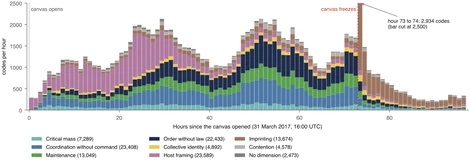
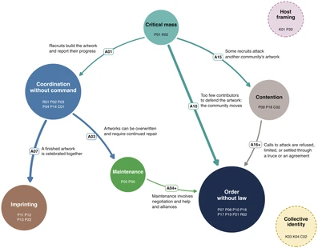
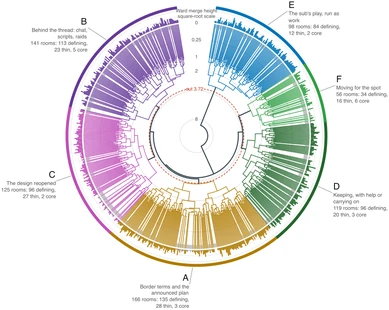
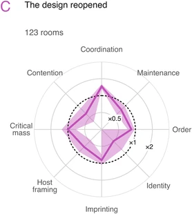

Findings
In r/PlaceNL, the script that defended the Dutch flag kept erasing the canal houses members wanted to add. Across 705 communities, the study traces how people built, defended and changed their artwork.
-

Appendix Fig. 1Codes over time In the first 34 hours, the most common codes concern how subreddits made room for the event. -

Appendix Fig. 2The population model The model traces how communities recruit people, build artwork together and repair it when others change it. -

Appendix Fig. 3Tree of the six forms The tree groups 558 communities into six forms using their codes and the changes they sought in the model. -

Appendix Fig. 4Form profiles In form C, coordination accounts for 40% of selected changes on average, compared with 28% across communities with changes.
The two journeys below take one community and then all 705 through the same parts of the study. Browse the files by stage.
One community: r/PlaceNL
One community, part by part: r/PlaceNL, founded for the event to coordinate the Dutch artworks.
The Dutch area, hour by hour. r/PlaceNL joined it on the second day, and most hands that built it left no post in the community.
One community coder and two fleet coders turn its 701 posts and comments into 246 codes, 21 themes and a case account; the same coder later builds a local model.
The aggregator reads the coder's work, writes a note on the community and places each theme in the population's coding structure.
The model goes back to r/PlaceNL's coder, who reports canal houses erased by the community's own defense script. Corrections from other communities revise the model's account of repair, and r/PlaceNL's line becomes a specification of the revised claim.
5 Organizational forms: r/PlaceNL
r/PlaceNL falls in form B, Behind the thread, and departs from it in places.
The population model
All 705 communities, through the same parts.
Of the 777 subreddits credited with an artwork, 705 stay, because their members wrote about the event while the canvas was open.
2 Community coding: 705 communities
Each community is read by its own community coder: 115,388 first-order codes and 7,844 second-order themes.
3 Aggregation: 705 communities, A1 to C5
The aggregator composes the coders' work into 197 third-order themes, 28 fourth-order themes, eight aggregate dimensions and one model of how organizing unfolds.
4 The return: 705 communities, D1 to D3
Every community coder answers the model, and the aggregator rules on each change and revises it.
5 Organizational forms: 705 communities, D4 to E2
Communities that asked for similar changes form six candidate organizational forms; the aggregator audits the run and reviews how it was handled.
Time and costs
How long each part of the study took and what it consumed: 71 days, from the first community coding run under an earlier contract, on 18 August, to the last aggregator session on 28 October.
All the work used 51.82 billion tokens, worth $20,497 at list prices; $68 was paid in cash, to DeepSeek.
Community coding used 15.74 billion tokens and the aggregator 21.45 billion; the return, the re-check, the independent readers and the r/place subreddit used the rest.
21.5 days in 314 sessions, from 6 to 28 October; it worked 10.3 of those days, and the usage limits of the Claude subscription took 3.9.
Each model's published price per billion tokens, and the work not counted.